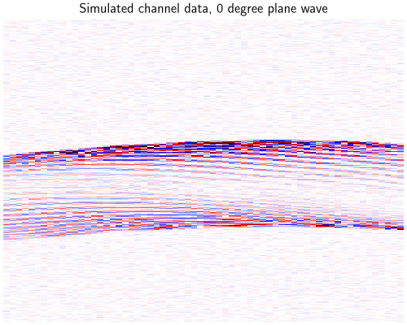
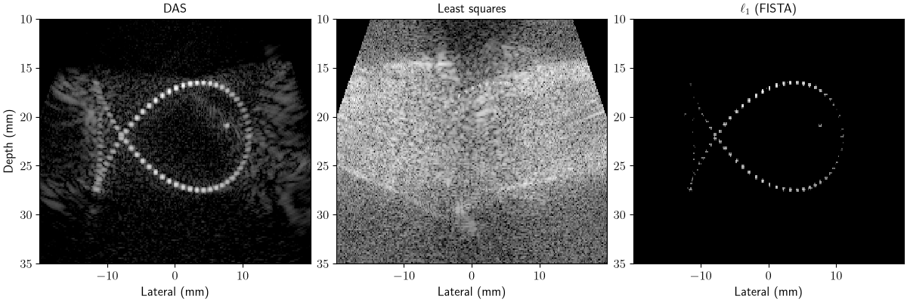
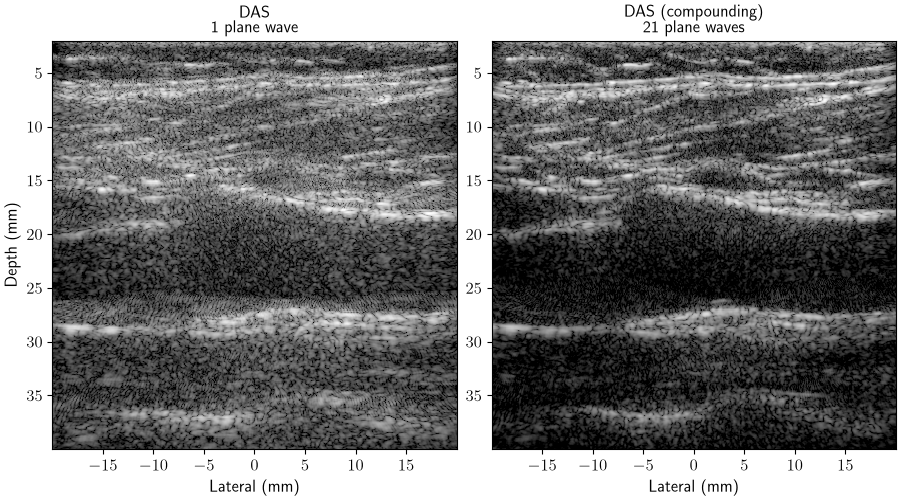
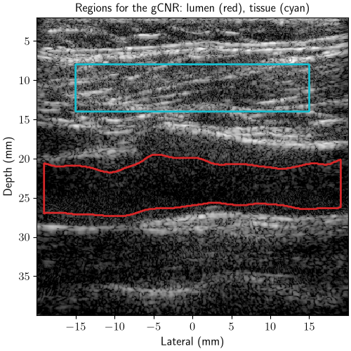
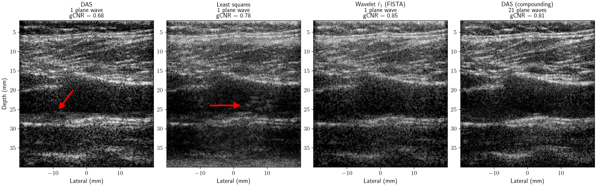
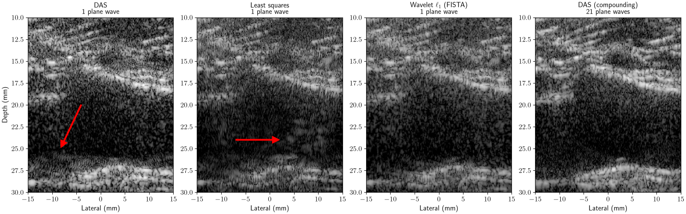

Note
New to DeepInverse? Get started with the basics with the 5 minute quickstart tutorial..
Ultrasound regularized beamforming with zea toolbox#
This example shows how to use the zea
ultrasound toolbox [1] with deepinv to form ultrasound
images from raw channel data, by posing the image formation step, known as
beamforming, as an inverse problem. We use the differentiable ultrasound
processing pipeline of zea to compute the forward operator \(A\) of the linear
model that relates the tissue reflectivity to the channel data, and solve the
inverse problem with deepinv.optim.FISTA. First, a quick refresher on
ultrasound image formation.
Ultrasound imaging. An ultrasound probe is an array of elements that both transmit sound pulses and record the returning echoes. Every element records the echoes over time, giving a 2-D array of signals per transmit called the channel data (see this blog post for an intuitive explanation). Scanners use many different transmit schemes: focused beams that scan the image line by line, unfocused plane waves or diverging waves that illuminate the whole field of view at once, or coded transmits. Fewer transmits per image mean a higher frame rate, but a lower image quality.
Beamforming. This process turns the channel data into an image. The standard method, delay-and-sum (DAS), computes for every pixel the travel time of the echo from the transmit to each element, and sums the corresponding samples. Combining the DAS images of many transmits improves resolution and contrast [2], at the cost of frame rate. Envelope detection and log compression of the beamformed image then give the displayed B-mode image.
Beamforming as an inverse problem. Whatever the transmit scheme, the channel data \(y\) are linear in the tissue reflectivity \(x\) on a pixel grid, \(y = A x + \varepsilon\), and DAS is exactly the adjoint \(A^{\top}\) [3]. DAS is a back-projection, which leaves artifacts when few transmits are used. We can instead reconstruct the image by solving
where \(g\) is a prior on the image [3][4].
zea implements the full ultrasound processing chain, from raw channel data to the displayed image, as a pipeline of composable and differentiable operations, for any transmit scheme. zea operations run natively in PyTorch via Keras 3 so can be used easily in deepinv: we use the zea DAS beamformer as \(A^{\top}\) and obtain \(A\) by automatic differentiation. zea can also simulate channel data with realistic noise.
Data. The in-vivo recordings come from Open-H-RF, an open dataset of ultrasound channel data in the zea format, hosted on HuggingFace.
This example. We solve the inverse problem for two acquisitions:
simulated point scatterers, with an \(\ell_1\) prior;
an in-vivo carotid artery imaged with a single plane wave by a linear probe, with a wavelet prior.
Tip
Open-H-RF has raw data from various acquisition types, including focused-beam, plane-waves, ultrasound tomography etc. Simply swap out the data name in the in-vivo section below, and zea will automatically load this data along with its acquisition params.
Note
This example requires zea and Python 3.11 or
newer. Install with pip install zea.
Setup zea#
zea picks its Keras backend when it is imported, so we select PyTorch first. Then we import the utilities for this example, and the zea processing operations from which we build the imaging pipelines.
import os
os.environ.setdefault("KERAS_BACKEND", "torch")
import matplotlib.pyplot as plt
import numpy as np
import torch
import zea
from scipy import ndimage
from zea.beamform.delays import compute_t0_delays_planewave
from zea.ops import (
Beamform,
Demodulate,
Downsample,
EnvelopeDetect,
LogCompress,
Normalize,
Simulate,
)
import deepinv as dinv
device = dinv.utils.get_device()
zea.log.logger.setLevel("ERROR")
Selected GPU 0 with 15023.3125 MiB free memory
zea pipelines#
We build two zea pipelines, which we use for all acquisitions below:
Beamforming: demodulate the RF channel data to complex (IQ) data, stored as two real channels, downsample, and beamform with DAS. This gives an IQ image, and is \(A^{\top}\): all three operations are linear.
B-mode: envelope detection and log compression, for display. zea expects the I/Q channels last, so we move them there with
x.movedim(1, -1).
das_pipeline = zea.Pipeline(
[
Demodulate(),
Downsample(factor=4),
# a large patch size makes beamforming much faster on GPU
Beamform(beamformer="delay_and_sum", enable_pfield=False, patch_size=2**14),
],
jit_options=None,
device=str(device),
)
bmode_pipeline = zea.Pipeline(
[EnvelopeDetect(), Normalize(input_range=(0, None)), LogCompress(clip=False)],
jit_options=None,
device=str(device),
)
/local/pberna03/actions-runner/_work/deepinv/deepinv/.pixi/envs/docs/lib/python3.12/site-packages/torch/jit/_script.py:365: DeprecationWarning: `torch.jit.script_method` is deprecated. Please switch to `torch.compile` or `torch.export`.
warnings.warn(
The forward operator#
Much of ultrasound beamforming research focused on improving DAS, i.e.
\(A^{\top} y\). Framing ultrasound reconstruction as an inverse problem
instead allows us to use better reconstruction algorithms, such as least
squares, iterative algorithms and deep learning methods. These all require the
forward operator \(A\). Since the zea beamformer is differentiable, we do
not implement \(A\) by hand: deepinv.physics.UltrasoundWithZea
takes the beamforming pipeline and the acquisition parameters (probe,
transmits, pixel grid, …), uses the pipeline as \(A^{\top}\), and
computes \(A\) as its adjoint with automatic differentiation:
It works for any transmit scheme that zea can beamform, and we use it for both
acquisitions below. zea stores channel data as
(batch, transmits, time, elements, channels). Following the deepinv
convention, the physics instead takes measurements \(y\) of shape
(B, C, transmits, time, elements), and returns images of shape
(B, I/Q, depth, lateral).
Note
For a dedicated plane-wave ultrasound operator that implements the forward
operator rather than relying on automatic differentiation, see
deepinv.physics.UltrasoundPlaneWave following Besson et al.[3].
1. Point scatterers#
To see what DAS leaves behind, we first simulate channel data with the zea
simulator zea.ops.Simulate, for a phantom of point scatterers shaped
like a fish. We use the setup of the
zea simulation example:
a 64-element linear probe at 5 MHz, which transmits 5 plane waves steered
between -15 and 15 degrees, and some electronic noise.
n_el, aperture, center_frequency = 64, 20e-3, 5e6
probe_geometry = np.stack(
[np.linspace(-aperture / 2, aperture / 2, n_el), np.zeros(n_el), np.zeros(n_el)],
axis=1,
)
angles = np.linspace(-15, 15, 5) * np.pi / 180
delays = compute_t0_delays_planewave(probe_geometry, angles, sound_speed=1540.0)
params_sim = zea.Parameters(
probe_geometry=probe_geometry,
element_width=aperture / (n_el - 1),
center_frequency=center_frequency,
sampling_frequency=4 * center_frequency,
sound_speed=1540.0,
n_ax=1024,
n_el=n_el,
n_ch=1,
n_tx=len(angles),
polar_angles=angles,
t0_delays=delays,
tx_apodizations=np.ones((len(angles), n_el)) * np.hanning(n_el),
focus_distances=np.full(len(angles), np.inf),
initial_times=np.full(len(angles), 1e-6),
apply_lens_correction=False,
lens_thickness=1e-3,
lens_sound_speed=1000.0,
attenuation_coef=0.0,
noise_level_db=-40.0,
transmit_origins=np.zeros((len(angles), 3)),
xlims=(-20e-3, 20e-3),
zlims=(10e-3, 35e-3),
pixels_per_wavelength=2,
)
scatterers = zea.beamform.phantoms.fish() # (n_scatterers, 3) positions in m
simulator = zea.Pipeline([Simulate()], jit_options=None, device=str(device))
with torch.no_grad():
y_sim = simulator(
scatterer_positions=torch.tensor(scatterers, dtype=torch.float32)[None],
scatterer_magnitudes=torch.ones(1, len(scatterers)),
**simulator.prepare_parameters(params_sim),
)["data"]
y_sim = y_sim.movedim(-1, 1) # zea (B, ..., C) to deepinv (B, C, ...)
print(f"Channel data y (B, C, transmits, time, elements): {tuple(y_sim.shape)}")
WARNING:absl:Failed to load jax profiler: No module named 'jax'
Channel data y (B, C, transmits, time, elements): (1, 1, 5, 1024, 64)
In the channel data of a transmit (time against element), each scatterer appears as a hyperbola.
clip = y_sim.abs().max().item() / 2
dinv.utils.plot(
(y_sim[:, :, 2] / clip + 1) / 2,
titles="Simulated channel data, 0 degree plane wave",
cmap="seismic",
aspect="auto",
rescale_mode="clip",
figsize=(5, 4),
)

We build the physics, check that \(A\) and DAS are indeed adjoint with
adjointness_test, and
compute the operator norm for the step size of FISTA.
physics_sim = dinv.physics.UltrasoundWithZea(das_pipeline, params_sim)
with torch.no_grad():
x_das_sim = physics_sim.A_adjoint(y_sim)
print(f"Image x (B, I/Q, depth, lateral): {tuple(x_das_sim.shape)}")
print(
f"Adjointness test (should be ~0): {physics_sim.adjointness_test(x_das_sim):.1e}"
)
norm_sim = physics_sim.compute_norm(
x_das_sim, max_iter=500, tol=1e-2, verbose=False
)
Image x (B, I/Q, depth, lateral): (1, 2, 163, 260)
Adjointness test (should be ~0): 7.8e-08
/local/pberna03/actions-runner/_work/deepinv/deepinv/deepinv/physics/forward.py:639: DeprecationWarning: Using `compute_norm(squared=True)` is deprecated. Use `compute_sqnorm()` instead to compute the squared spectral norm (||A^T A||_2). In a future version, `compute_norm()` will compute the non-squared spectral norm (||A||_2) by default.
warnings.warn(
The scene is sparse, so we use an \(\ell_1\) prior on the pixels,
deepinv.optim.L1Prior, and solve the problem with
deepinv.optim.FISTA. Each FISTA iteration costs one forward and one
adjoint beamforming. For comparison, we also compute the unregularized
least-squares solution with A_dagger.
fista_sim = dinv.optim.FISTA(
data_fidelity=dinv.optim.data_fidelity.L2(),
prior=dinv.optim.L1Prior(),
lambda_reg=0.05 * x_das_sim.abs().max().item(),
stepsize=1.0 / norm_sim.item(),
max_iter=100,
custom_init=lambda y, physics: (torch.zeros_like(x_das_sim),) * 2,
)
with torch.no_grad():
x_l1_sim = fista_sim(y_sim, physics_sim)
x_ls_sim = physics_sim.A_dagger(y_sim, solver="lsqr", max_iter=100)
DAS spreads every scatterer into side lobes, which add up to clutter between the scatterers. Least squares keeps clutter that is consistent with the measurements. The \(\ell_1\) prior keeps only the few pixels that explain the data and recovers the fish.
extent_sim = params_sim.extent_imshow * 1e3 # mm
axs = dinv.utils.plot(
{
name: torch.from_numpy(
zea.display.to_8bit(
bmode_pipeline(data=x.movedim(1, -1), return_numpy=True)["data"][0],
dynamic_range=(-50, 0),
pillow=False,
)
/ 255.0
)[None, None]
for name, x in {
"DAS": x_das_sim,
"Least squares": x_ls_sim,
r"$\ell_1$ (FISTA)": x_l1_sim,
}.items()
},
extent=extent_sim,
aspect="auto",
rescale_mode="clip",
figsize=(12, 4),
show=False,
return_axs=True,
)
for ax in axs.ravel():
ax.axis("on")
ax.set_xlabel("Lateral (mm)")
axs.ravel()[0].set_ylabel("Depth (mm)")
plt.show()

/local/pberna03/actions-runner/_work/deepinv/deepinv/.pixi/envs/docs/lib/python3.12/site-packages/keras/src/backend/torch/core.py:276: DeprecationWarning: __array__ implementation doesn't accept a copy keyword, so passing copy=False failed. __array__ must implement 'dtype' and 'copy' keyword arguments. To learn more, see the migration guide https://numpy.org/devdocs/numpy_2_0_migration_guide.html#adapting-to-changes-in-the-copy-keyword
return np.array(x)
2. In-vivo carotid artery#
Real tissue is a continuum of scatterers, which produces speckle. We use a
recording of the carotid artery from the
tue-carotid
subset of Open-H-RF, acquired with a linear probe.
zea.File streams only the parts of the file that we read. We keep the 21 steered
plane waves of one frame, and define the pixel grid on which we reconstruct.
with zea.File("hf://nvidia/Open-H-RF/tue-carotid/data/9_long_bifur_R_0000.hdf5") as f:
params = f.load_parameters()
plane_waves = params.find_transmits("plane")
raw_data = f.data.raw_data[:1, plane_waves] # (1, 21, time, elements, 1)
params.xlims = (-20e-3, 20e-3)
params.zlims = (2e-3, 40e-3)
params.pixels_per_wavelength = 2
y_all = torch.tensor(raw_data, dtype=torch.float32, device=device).movedim(-1, 1)
y_all = y_all / y_all.abs().max()
print(f"Channel data (B, C, transmits, time, elements): {tuple(y_all.shape)}")
Channel data (B, C, transmits, time, elements): (1, 1, 21, 2176, 128)
As in many imaging modalities, we can trade off frame rate for image quality by using fewer transmits. In this acquisition, each transmit is a plane wave, and the 21 plane waves are steered between -18 and 18 degrees. We retrospectively use only a single transmit, the 0 degree plane wave, as our measurements. This is called single plane-wave imaging, and gives a much higher frame rate and a lower data rate, which allows for ultrafast ultrasound imaging. As reference, we combine the DAS images of all 21 plane waves (coherent compounding). The physics reads the selected transmits when it is created, so we create one for the single plane wave, and one for all 21 plane waves.
params.selected_transmits = [plane_waves[0]]
physics = dinv.physics.UltrasoundWithZea(das_pipeline, params)
y = y_all[:, :, :1]
params.selected_transmits = plane_waves
physics_all = dinv.physics.UltrasoundWithZea(das_pipeline, params)
with torch.no_grad():
x_das = physics.A_adjoint(y)
x_compound = physics_all.A_adjoint(y_all)
norm = physics.compute_norm(x_das, max_iter=500, tol=1e-2, verbose=False)
/local/pberna03/actions-runner/_work/deepinv/deepinv/deepinv/physics/forward.py:639: DeprecationWarning: Using `compute_norm(squared=True)` is deprecated. Use `compute_sqnorm()` instead to compute the squared spectral norm (||A^T A||_2). In a future version, `compute_norm()` will compute the non-squared spectral norm (||A||_2) by default.
warnings.warn(
A single plane wave leaves clutter in the dark lumen. Compounding all plane waves removes much of it, but needs one transmit per angle and thus lowers the frame rate. Our goal is to approach the compounded image from a single plane wave.
axs = dinv.utils.plot(
{
name: torch.from_numpy(
zea.display.to_8bit(
bmode_pipeline(data=x.movedim(1, -1), return_numpy=True)["data"][0],
dynamic_range=(-50, 0),
pillow=False,
)
/ 255.0
)[None, None]
for name, x in {
"DAS\n1 plane wave": x_das,
"DAS (compounding)\n21 plane waves": x_compound,
}.items()
},
extent=params.extent_imshow * 1e3,
aspect="auto",
rescale_mode="clip",
figsize=(9, 5),
show=False,
return_axs=True,
)
for ax in axs.ravel():
ax.axis("on")
ax.set_xlabel("Lateral (mm)")
axs.ravel()[0].set_ylabel("Depth (mm)")
plt.show()

/local/pberna03/actions-runner/_work/deepinv/deepinv/.pixi/envs/docs/lib/python3.12/site-packages/keras/src/backend/torch/core.py:276: DeprecationWarning: __array__ implementation doesn't accept a copy keyword, so passing copy=False failed. __array__ must implement 'dtype' and 'copy' keyword arguments. To learn more, see the migration guide https://numpy.org/devdocs/numpy_2_0_migration_guide.html#adapting-to-changes-in-the-copy-keyword
return np.array(x)
Real tissue is approximately sparse in a wavelet basis. Following
Besson et al.[3], the prior \(g(x) = \|\Psi x\|_1\)
concatenates several Daubechies wavelets, which
deepinv.optim.WaveletPrior supports by passing a list of wavelets. As
before, we compare with the least-squares solution.
wavelet_prior = dinv.optim.WaveletPrior(
level=3, wv=[f"db{i}" for i in range(1, 9)], device=device
)
fista = dinv.optim.FISTA(
data_fidelity=dinv.optim.data_fidelity.L2(),
prior=wavelet_prior,
lambda_reg=0.03 * x_das.abs().max().item(),
stepsize=1.0 / norm.item(),
max_iter=100,
custom_init=lambda y, physics: (torch.zeros_like(x_das),) * 2,
)
with torch.no_grad():
x_wavelet = fista(y, physics)
x_ls = physics.A_dagger(y, solver="lsqr", max_iter=100)
bmodes = {
name: bmode_pipeline(data=x.movedim(1, -1), return_numpy=True)["data"][0]
for name, x in {
"DAS\n1 plane wave": x_das,
"Least squares\n1 plane wave": x_ls,
r"Wavelet $\ell_1$ (FISTA)" "\n1 plane wave": x_wavelet,
"DAS (compounding)\n21 plane waves": x_compound,
}.items()
}
/local/pberna03/actions-runner/_work/deepinv/deepinv/.pixi/envs/docs/lib/python3.12/site-packages/keras/src/backend/torch/core.py:276: DeprecationWarning: __array__ implementation doesn't accept a copy keyword, so passing copy=False failed. __array__ must implement 'dtype' and 'copy' keyword arguments. To learn more, see the migration guide https://numpy.org/devdocs/numpy_2_0_migration_guide.html#adapting-to-changes-in-the-copy-keyword
return np.array(x)
Quantifying ultrasound image quality#
Image formation methods change the brightness and dynamic range of an image, which biases a visual comparison. We therefore histogram-match every image to the compounded reference [5], so that only the image structure differs. We measure how well the dark vessel lumen stands out from the tissue with the generalized contrast-to-noise ratio (gCNR) [6], which ranges from 0 (indistinguishable) to 1 (perfectly separable). The lumen is segmented automatically from the reference image, and the tissue region is a box above the vessel.
reference = bmodes["DAS (compounding)\n21 plane waves"]
extent = params.extent_imshow * 1e3 # mm
x_mm = np.linspace(extent[0], extent[1], reference.shape[1])
z_mm = np.linspace(extent[3], extent[2], reference.shape[0])
pixel_mm = z_mm[1] - z_mm[0]
smooth = ndimage.gaussian_filter(np.clip(reference, -60, 0), 1.0 / pixel_mm)
dark = ndimage.binary_opening(
smooth < np.percentile(smooth, 30), iterations=round(0.5 / pixel_mm)
)
labels, _ = ndimage.label(dark)
lumen = labels == labels[np.abs(z_mm - 23).argmin(), np.abs(x_mm - 5).argmin()]
lumen = ndimage.binary_fill_holes(
ndimage.binary_closing(lumen, iterations=round(1.0 / pixel_mm))
)
tissue = (np.abs(x_mm[None]) <= 15) & (z_mm[:, None] >= 8) & (z_mm[:, None] <= 14)
matched = {
name: zea.display.histogram_match(bmode, reference)
for name, bmode in bmodes.items()
}
gcnr = {
name: float(zea.metrics.gcnr(bmode[lumen], bmode[tissue]))
for name, bmode in matched.items()
}
displayed = {
name: torch.from_numpy(
zea.display.to_8bit(bmode, dynamic_range=(-50, 0), pillow=False) / 255.0
)[None, None].float()
for name, bmode in matched.items()
}
axs = dinv.utils.plot(
displayed["DAS (compounding)\n21 plane waves"],
titles="Regions for the gCNR: lumen (red), tissue (cyan)",
extent=extent,
aspect="auto",
rescale_mode="clip",
figsize=(5, 5),
show=False,
return_axs=True,
)
ax = axs.ravel()[0]
ax.axis("on")
ax.contour(x_mm, z_mm, lumen, [0.5], colors="tab:red", linewidths=2)
ax.contour(x_mm, z_mm, tissue, [0.5], colors="tab:cyan", linewidths=2)
ax.set_xlabel("Lateral (mm)")
ax.set_ylabel("Depth (mm)")
plt.show()

Results#
DAS leaves clutter in the lumen (arrow). Least squares alone cannot remove it (arrow), since it is consistent with the measurements. The wavelet prior removes most of it, and reaches a higher lumen contrast than compounding all 21 plane waves.
axs = dinv.utils.plot(
{f"{name}\ngCNR = {gcnr[name]:.2f}": b for name, b in displayed.items()},
extent=extent,
aspect="auto",
rescale_mode="clip",
figsize=(16, 5),
show=False,
return_axs=True,
)
for ax in axs.ravel():
ax.axis("on")
ax.set_xlabel("Lateral (mm)")
axs.ravel()[0].set_ylabel("Depth (mm)")
arrows = [((-4.0, 20.0), (-8.2, 24.9)), ((-7.0, 24.0), (2.0, 24.0))]
for ax, (tail, head) in zip(axs.ravel()[:2], arrows, strict=True):
ax.annotate("", xy=head, xytext=tail, arrowprops=dict(color="red", width=2))
plt.show()

Zoom on the vessel:
axs = dinv.utils.plot(
displayed,
extent=extent,
aspect="auto",
rescale_mode="clip",
figsize=(16, 5),
show=False,
return_axs=True,
)
for ax in axs.ravel():
ax.axis("on")
ax.set_xlim(-15, 15)
ax.set_ylim(30, 10)
ax.set_xlabel("Lateral (mm)")
axs.ravel()[0].set_ylabel("Depth (mm)")
for ax, (tail, head) in zip(axs.ravel()[:2], arrows, strict=True):
ax.annotate("", xy=head, xytext=tail, arrowprops=dict(color="red", width=2))
plt.show()

We also compare each single-plane-wave image to the compounded reference with
PSNR and SSIM.
These scores stay low for all methods. The compounded image is not a ground
truth: although it contains the same 0 degree transmit, it sums 21 steered
transmits, which changes the point-spread function and thus the speckle pattern
itself. Pixel-wise metrics therefore mostly measure speckle differences rather
than image quality, which is why we rely on the gCNR above.
DAS gCNR 0.68 | PSNR 16.57 dB | SSIM 0.256
Least squares gCNR 0.78 | PSNR 15.92 dB | SSIM 0.206
Wavelet $\ell_1$ (FISTA) gCNR 0.85 | PSNR 17.63 dB | SSIM 0.260
What next?#
Replace the wavelet prior with a learned prior: a denoiser (
deepinv.optim.PnP), or a generative model such as a diffusion model [7] (see the zea diffusion model example). You can also unroll and train the algorithm (deepinv.unfolded.unfolded_builder()).Refine the forward model \(A\), for instance with
a closed-form forward model [3], as in
deepinv.physics.UltrasoundPlaneWave(see the tour of the plane-wave ultrasound operator);the zea simulator as forward model, with the scatterers on the pixel grid, which also models element directivity, attenuation and the lens (see the zea simulation example);
other formulations of the beamforming inverse problem [4];
scatterer positions optimized off the grid [8].
Try other transmit schemes, probes and anatomies from Open-H-RF: loading another file only requires changing its path. For focused transmits, which each insonify only part of the image, weight the transmits by their pressure field (
Beamform(enable_pfield=True)), and limit memory with thetransmits_per_groupargument ofdeepinv.physics.UltrasoundWithZea.See the other ultrasound examples: a tour of the plane-wave ultrasound operator, plug-and-play reconstruction of in-vivo plane-wave data with
deepinv.physics.UltrasoundPlaneWave, and despeckling of B-mode images.
- References:
Total running time of the script: (0 minutes 54.398 seconds)